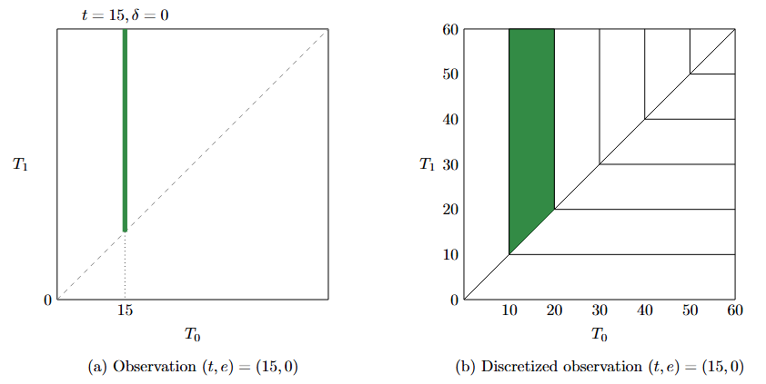
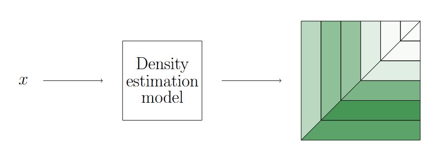
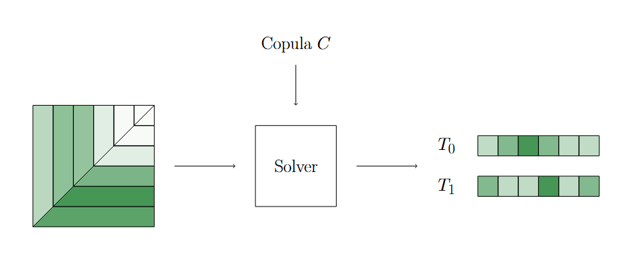

Two-Step Algorithm
This section describes the two-step algorithm for survival analysis using the cenreg package. The two-step algorithm is a method for estimating survival functions in the presence of censored data.
First Step: Censored Joint Distribution Estimation
Let \((x,t,e)\) be a data point for survival analysis, where \(x\) is a feature vector, \(t\) is the time of the event or censoring, and \(e\) is an event indicator (1 if the event occurred, 0 if censored). If the time horizon is descretized, each \((t,e)\) can be represented as a vertical line segment (if \(e=0\)) or a horizontal line segment ( (if \(e=1\))) in the two-dimensional space as shown in this figure.
{kind=link}

Censored Joint Distribution
The first step of this algorithm estimates the distribution of the discretized observations by using a density model (e.g., LightGBM, neural network, etc.).
{kind=link}

Density Estimation
Second Step: Estimate Survival Functions
The second step of this algorithm compute the survival function (equivalently, the CDFs of \(T_0\) and \(T_1\)) from the estimated distribution.
{kind=link}

Estimate Survival Functions
Jupyter Notebooks
We provide Jupyter notebooks that demonstrate the two-step algorithm using different models. You can find these notebooks in the notebooks directory of the cenreg repository.